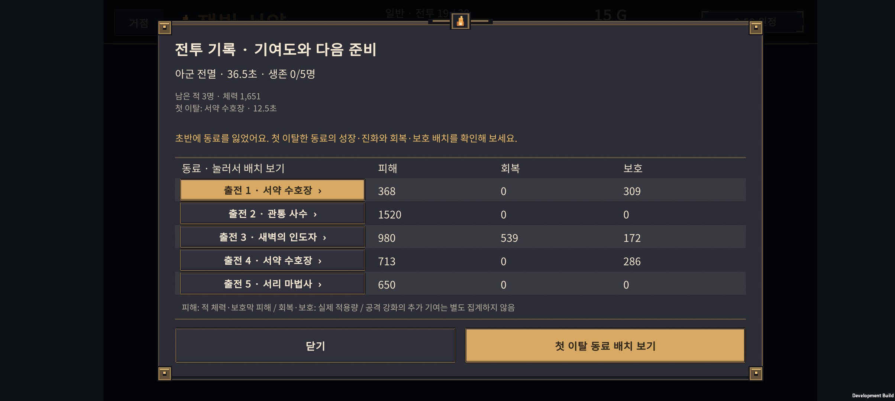

v0.68 실기기·빌드 검증
2026-11-01 · Galaxy Buddy2 / SM-M236L · 2408×1080 가로 화면
최종 빌드
- Unity 6000.3.24f1 / Android Development APK.
RetryReviewValidation.ValidateAndBuild: 51 checks PASS,Build Finished, Result: Success.- APK:
unity/Builds/Android/expedition-combat-prototype.apk(301,288,411 bytes). - SHA-256:
0246C1A05D2B8BE9C1FFE097B29155E5D4BFE379FEAC6803A3C594950C2E3AF6. - 이 APK는 개발 검증용이며 스토어 배포 완료를 의미하지 않는다.
화면 검사
기존 정상 진행 체크포인트로 실제 Core 전투를 재생하고, 결과·기록·재도전 준비를 실제 게임 UI로 표시했다. 저장 쓰기를 막는 명시적 개발용 검증 모드이며, 검증 후 기존 화면 상태를 복구한다.
18장 캡처:
- 15전투 시간 초과, 18·19전투 전멸, 18전투 승리의 결과·기록 8장.
- 패배 3종의 첫 이탈 동료 선택·기록 재열기·회복 동료 선택 9장.
- 상세 기록이 없는 경우의 안내 1장.
처음 캡처에서 새 재도전 안내와 기존 지원 범위 설명이 같은 줄에 겹쳤다. 중복 안내를 제거하고 기존 설명의 폭과 기록 버튼을 분리한 뒤 다시 빌드·설치해 확인했다. 동료 이름·하단 버튼·범위 안내·오른쪽 동료 상세에서 해당 겹침과 글자 잘림이 보이지 않는다.
실제 터치
자동 함수 호출과 별도로 다음 경로를 실제 Android 터치로 확인했다.
- 패배 결과의 전투 기록 열기.
- 출전 4 · 수호 기사 행 또는 하단 첫 이탈 동료 배치 보기 누르기. 두 경로를 각각 확인했다.
- 준비 화면에서 해당 유닛의 선택 표시와 지원 범위 확인.
- 이전 전투 기록 다시 열기.
- 세 번째 행의 회복 동료 새벽의 인도자 선택 → 해당 지원 범위 표시.
최종 빠른 선택 버튼 경유 로그:
15:46:52 RETRY_AUDIT_OPEN_READY
15:46:54 RETRY_AUDIT_FOCUS_READY
15:46:55 RETRY_AUDIT_REOPEN_READY
15:47:22 RETRY_AUDIT_SECOND_READY
15:47:23 RETRY_AUDIT_TOUCH_PASS
일반 같은 전투 재도전 버튼에서 준비로 넘어가도 기록을 다시 열 수 있는 조건은 Unity 회귀 검사로 확인했다. 유닛 상세와 재료를 소비하는 실제 성장 동작 전체를 이번 터치 경로에서 다시 검사한 것은 아니다.



데이터 보존
검증 전에 기존 계정 저장 2슬롯·손상 보관본의 존재 여부·PlayerPrefs를 백업했다. 종료 후 존재 여부와 내용을 복원하고 바이트 단위 일치를 확인했다. 이번 검증의 명시된 임시 체크포인트·캡처·플래그만 정리했고 앱은 종료한 상태다. 새 APK 설치는 유지했다.
게임 난이도 조정이나 플레이어 저장 상태 변경 없이 UI를 확인했다. 51개 Unity 검사에서는 준비로 넘어갈 때 Phase 외에 골드·남은 기회·편성·난수·되돌리기 기록이 그대로인지 비교했다.